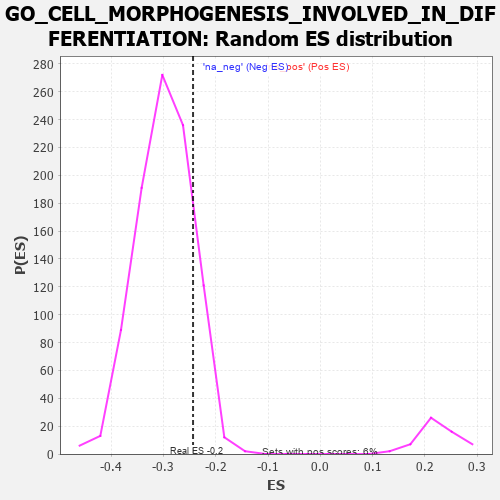

| | | Dataset | 7d |
| Phenotype | NoPhenotypeAvailable |
| Upregulated in class | na_neg |
| GeneSet | GO_CELL_MORPHOGENESIS_INVOLVED_IN_DIFFERENTIATION |
| Enrichment Score (ES) | -0.24341063 |
| Normalized Enrichment Score (NES) | -0.8149868 |
| Nominal p-value | 0.85562634 |
| FDR q-value | 0.98385966 |
| FWER p-Value | 1.0 |
Table: GSEA Results Summary
 Fig 1: Enrichment plot: GO_CELL_MORPHOGENESIS_INVOLVED_IN_DIFFERENTIATION
Fig 1: Enrichment plot: GO_CELL_MORPHOGENESIS_INVOLVED_IN_DIFFERENTIATION
Profile of the Running ES Score & Positions of GeneSet Members on the Rank Ordered List
| PROBE | GENE SYMBOL | GENE_TITLE | RANK IN GENE LIST | RANK METRIC SCORE | RUNNING ES | CORE ENRICHMENT | | 1 | ST14 | | | 7 | 5.713 | 0.0676 | No |
| 2 | DCLK1 | | | 55 | 2.532 | 0.0919 | No |
| 3 | RAC2 | | | 60 | 2.442 | 0.1206 | No |
| 4 | RHOH | | | 228 | 0.987 | 0.1111 | No |
| 5 | ULK1 | | | 272 | 0.875 | 0.1160 | No |
| 6 | SHOX2 | | | 288 | 0.842 | 0.1242 | No |
| 7 | ARX | | | 322 | 0.782 | 0.1294 | No |
| 8 | LGR6 | | | 360 | 0.738 | 0.1335 | No |
| 9 | RADIL | | | 374 | 0.720 | 0.1404 | No |
| 10 | LRP1 | | | 470 | 0.648 | 0.1360 | No |
| 11 | DOK6 | | | 536 | 0.616 | 0.1351 | No |
| 12 | SRF | | | 542 | 0.615 | 0.1418 | No |
| 13 | RAPH1 | | | 592 | 0.597 | 0.1427 | No |
| 14 | FBXW8 | | | 601 | 0.594 | 0.1488 | No |
| 15 | ID1 | | | 719 | 0.555 | 0.1404 | No |
| 16 | RERE | | | 787 | 0.536 | 0.1383 | No |
| 17 | MEF2C | | | 1054 | 0.473 | 0.1099 | No |
| 18 | SRC | | | 1128 | 0.459 | 0.1060 | No |
| 19 | GAB1 | | | 1158 | 0.453 | 0.1077 | No |
| 20 | WDR36 | | | 1260 | 0.437 | 0.1000 | No |
| 21 | TBCD | | | 1338 | 0.422 | 0.0952 | No |
| 22 | DRGX | | | 1378 | 0.414 | 0.0952 | No |
| 23 | DOCK7 | | | 1398 | 0.410 | 0.0977 | No |
| 24 | IFRD1 | | | 1486 | 0.392 | 0.0912 | No |
| 25 | SOS1 | | | 1547 | 0.384 | 0.0881 | No |
| 26 | CNTN4 | | | 1571 | 0.379 | 0.0897 | No |
| 27 | RNF6 | | | 1605 | 0.373 | 0.0900 | No |
| 28 | TRAK1 | | | 1714 | 0.354 | 0.0804 | No |
| 29 | PLOD3 | | | 1715 | 0.353 | 0.0846 | No |
| 30 | SMAD4 | | | 1860 | 0.326 | 0.0701 | No |
| 31 | NEO1 | | | 1879 | 0.323 | 0.0716 | No |
| 32 | PAK3 | | | 1889 | 0.322 | 0.0743 | No |
| 33 | CUL3 | | | 1893 | 0.321 | 0.0778 | No |
| 34 | BRSK2 | | | 1979 | 0.308 | 0.0706 | No |
| 35 | FOXD1 | | | 2093 | 0.292 | 0.0596 | No |
| 36 | BMP7 | | | 2107 | 0.290 | 0.0614 | No |
| 37 | ISLR2 | | | 2124 | 0.287 | 0.0628 | No |
| 38 | C1QBP | | | 2189 | 0.278 | 0.0579 | No |
| 39 | CREB1 | | | 2243 | 0.269 | 0.0544 | No |
| 40 | SIN3A | | | 2361 | 0.251 | 0.0424 | No |
| 41 | LHX9 | | | 2393 | 0.247 | 0.0414 | No |
| 42 | MET | | | 2430 | 0.240 | 0.0396 | No |
| 43 | NUMB | | | 2519 | 0.224 | 0.0310 | No |
| 44 | ATRN | | | 2640 | 0.207 | 0.0181 | No |
| 45 | DSCAM | | | 2689 | 0.200 | 0.0144 | No |
| 46 | SLIT2 | | | 2724 | 0.195 | 0.0124 | No |
| 47 | FER | | | 2803 | 0.183 | 0.0046 | No |
| 48 | NR2E1 | | | 2844 | 0.177 | 0.0016 | No |
| 49 | FGFR2 | | | 2895 | 0.167 | -0.0028 | No |
| 50 | RAB10 | | | 2952 | 0.157 | -0.0081 | No |
| 51 | UNC5C | | | 2997 | 0.150 | -0.0120 | No |
| 52 | LEF1 | | | 3037 | 0.144 | -0.0152 | No |
| 53 | FEZ1 | | | 3055 | 0.142 | -0.0157 | No |
| 54 | MAP2 | | | 3074 | 0.140 | -0.0163 | No |
| 55 | LHX3 | | | 3092 | 0.138 | -0.0168 | No |
| 56 | RREB1 | | | 3099 | 0.137 | -0.0160 | No |
| 57 | PAX6 | | | 3170 | 0.127 | -0.0234 | No |
| 58 | TRIO | | | 3192 | 0.123 | -0.0246 | No |
| 59 | RAB8A | | | 3319 | 0.102 | -0.0396 | No |
| 60 | KIF1A | | | 3415 | 0.088 | -0.0507 | No |
| 61 | SARM1 | | | 3432 | 0.086 | -0.0517 | No |
| 62 | CDK5 | | | 3480 | 0.080 | -0.0568 | No |
| 63 | UNK | | | 3491 | 0.079 | -0.0571 | No |
| 64 | PQBP1 | | | 3526 | 0.072 | -0.0606 | No |
| 65 | PARD3 | | | 3584 | 0.063 | -0.0671 | No |
| 66 | MAPK3 | | | 3589 | 0.062 | -0.0669 | No |
| 67 | STK25 | | | 3602 | 0.059 | -0.0677 | No |
| 68 | CCKAR | | | 3648 | 0.051 | -0.0729 | No |
| 69 | SPAST | | | 3801 | 0.027 | -0.0920 | No |
| 70 | TOP2B | | | 3938 | 0.005 | -0.1094 | No |
| 71 | EXT1 | | | 3954 | 0.001 | -0.1113 | No |
| 72 | ACTN1 | | | 4050 | -0.016 | -0.1233 | No |
| 73 | TAL1 | | | 4064 | -0.018 | -0.1247 | No |
| 74 | ROBO2 | | | 4066 | -0.018 | -0.1246 | No |
| 75 | ABL1 | | | 4125 | -0.027 | -0.1317 | No |
| 76 | CRK | | | 4139 | -0.031 | -0.1330 | No |
| 77 | UNC5D | | | 4217 | -0.044 | -0.1424 | No |
| 78 | ARPC2 | | | 4232 | -0.047 | -0.1436 | No |
| 79 | GPC1 | | | 4238 | -0.048 | -0.1437 | No |
| 80 | OPA1 | | | 4330 | -0.065 | -0.1545 | No |
| 81 | LAMC1 | | | 4445 | -0.084 | -0.1681 | No |
| 82 | LRRK2 | | | 4467 | -0.087 | -0.1698 | No |
| 83 | MEF2A | | | 4499 | -0.095 | -0.1726 | No |
| 84 | ILK | | | 4510 | -0.096 | -0.1727 | No |
| 85 | NPTN | | | 4519 | -0.098 | -0.1726 | No |
| 86 | NTRK2 | | | 4543 | -0.104 | -0.1743 | No |
| 87 | ABI2 | | | 4554 | -0.106 | -0.1743 | No |
| 88 | GATA3 | | | 4614 | -0.120 | -0.1804 | No |
| 89 | ATOH1 | | | 4615 | -0.121 | -0.1790 | No |
| 90 | RAB21 | | | 4620 | -0.122 | -0.1780 | No |
| 91 | LMX1A | | | 4631 | -0.124 | -0.1778 | No |
| 92 | LIMK1 | | | 4684 | -0.136 | -0.1828 | No |
| 93 | LHX2 | | | 4716 | -0.143 | -0.1851 | No |
| 94 | FBLN1 | | | 4748 | -0.149 | -0.1873 | No |
| 95 | PLCG1 | | | 4770 | -0.151 | -0.1882 | No |
| 96 | RTN4 | | | 4783 | -0.154 | -0.1879 | No |
| 97 | TNIK | | | 4804 | -0.158 | -0.1885 | No |
| 98 | WDR1 | | | 4824 | -0.163 | -0.1890 | No |
| 99 | SLIT3 | | | 4890 | -0.175 | -0.1952 | No |
| 100 | MARK2 | | | 4899 | -0.177 | -0.1941 | No |
| 101 | FZD4 | | | 4940 | -0.186 | -0.1970 | No |
| 102 | EP300 | | | 4941 | -0.186 | -0.1948 | No |
| 103 | PRKDC | | | 4955 | -0.189 | -0.1942 | No |
| 104 | FLNB | | | 5082 | -0.220 | -0.2077 | No |
| 105 | DRD2 | | | 5088 | -0.221 | -0.2057 | No |
| 106 | HDAC6 | | | 5183 | -0.244 | -0.2148 | No |
| 107 | PARVA | | | 5187 | -0.245 | -0.2122 | No |
| 108 | SMO | | | 5195 | -0.247 | -0.2102 | No |
| 109 | PTEN | | | 5262 | -0.261 | -0.2155 | No |
| 110 | EPHA4 | | | 5273 | -0.265 | -0.2136 | No |
| 111 | FAT1 | | | 5281 | -0.267 | -0.2113 | No |
| 112 | EPHA1 | | | 5349 | -0.285 | -0.2165 | No |
| 113 | GRIN1 | | | 5381 | -0.291 | -0.2170 | No |
| 114 | DLG4 | | | 5388 | -0.293 | -0.2142 | No |
| 115 | LATS1 | | | 5412 | -0.298 | -0.2136 | No |
| 116 | CUX1 | | | 5437 | -0.304 | -0.2130 | No |
| 117 | IST1 | | | 5442 | -0.305 | -0.2099 | No |
| 118 | KIF3A | | | 5480 | -0.313 | -0.2109 | No |
| 119 | GFRA1 | | | 5594 | -0.342 | -0.2213 | No |
| 120 | SLIT1 | | | 5735 | -0.387 | -0.2345 | No |
| 121 | VAMP7 | | | 5777 | -0.399 | -0.2350 | No |
| 122 | TRPC6 | | | 5784 | -0.401 | -0.2310 | No |
| 123 | SZT2 | | | 5882 | -0.429 | -0.2383 | Yes |
| 124 | VLDLR | | | 5898 | -0.434 | -0.2350 | Yes |
| 125 | DOCK1 | | | 5908 | -0.438 | -0.2309 | Yes |
| 126 | STK11 | | | 5922 | -0.443 | -0.2272 | Yes |
| 127 | RAC1 | | | 6036 | -0.484 | -0.2359 | Yes |
| 128 | VAMP3 | | | 6043 | -0.487 | -0.2309 | Yes |
| 129 | EVL | | | 6052 | -0.490 | -0.2260 | Yes |
| 130 | CALR | | | 6077 | -0.499 | -0.2231 | Yes |
| 131 | DBNL | | | 6084 | -0.501 | -0.2179 | Yes |
| 132 | FEZF2 | | | 6150 | -0.519 | -0.2200 | Yes |
| 133 | ROCK1 | | | 6152 | -0.520 | -0.2139 | Yes |
| 134 | PARVB | | | 6168 | -0.528 | -0.2095 | Yes |
| 135 | CDC42 | | | 6236 | -0.548 | -0.2115 | Yes |
| 136 | FLOT1 | | | 6276 | -0.564 | -0.2097 | Yes |
| 137 | NCAM1 | | | 6318 | -0.582 | -0.2080 | Yes |
| 138 | CDKL3 | | | 6401 | -0.618 | -0.2111 | Yes |
| 139 | PTPRD | | | 6423 | -0.629 | -0.2063 | Yes |
| 140 | LAMA1 | | | 6496 | -0.659 | -0.2076 | Yes |
| 141 | KANK1 | | | 6536 | -0.678 | -0.2045 | Yes |
| 142 | ROBO1 | | | 6577 | -0.699 | -0.2012 | Yes |
| 143 | PTPRS | | | 6646 | -0.738 | -0.2011 | Yes |
| 144 | PAK1 | | | 6691 | -0.757 | -0.1976 | Yes |
| 145 | GSK3B | | | 6719 | -0.768 | -0.1919 | Yes |
| 146 | LRP8 | | | 6931 | -0.889 | -0.2083 | Yes |
| 147 | DNM1L | | | 6963 | -0.913 | -0.2013 | Yes |
| 148 | MYH10 | | | 7048 | -0.966 | -0.2005 | Yes |
| 149 | ATL1 | | | 7062 | -0.972 | -0.1905 | Yes |
| 150 | RAB1A | | | 7096 | -0.993 | -0.1828 | Yes |
| 151 | RYK | | | 7102 | -1.000 | -0.1715 | Yes |
| 152 | WHRN | | | 7139 | -1.025 | -0.1638 | Yes |
| 153 | AR | | | 7169 | -1.046 | -0.1550 | Yes |
| 154 | LAMB1 | | | 7220 | -1.094 | -0.1483 | Yes |
| 155 | CIB1 | | | 7280 | -1.152 | -0.1420 | Yes |
| 156 | MYO7A | | | 7302 | -1.175 | -0.1306 | Yes |
| 157 | NGEF | | | 7335 | -1.209 | -0.1202 | Yes |
| 158 | LHX1 | | | 7431 | -1.305 | -0.1168 | Yes |
| 159 | LAMA2 | | | 7549 | -1.468 | -0.1142 | Yes |
| 160 | DCC | | | 7550 | -1.470 | -0.0966 | Yes |
| 161 | ANK3 | | | 7690 | -1.740 | -0.0935 | Yes |
| 162 | ADCY1 | | | 7695 | -1.752 | -0.0730 | Yes |
| 163 | CASP3 | | | 7747 | -1.902 | -0.0568 | Yes |
| 164 | DCDC2 | | | 7813 | -2.099 | -0.0399 | Yes |
| 165 | DLX5 | | | 7845 | -2.378 | -0.0154 | Yes |
| 166 | FYN | | | 7881 | -2.622 | 0.0115 | Yes |
Table: GSEA details [plain text format]

Fig 2: GO_CELL_MORPHOGENESIS_INVOLVED_IN_DIFFERENTIATION: Random ES distribution
Gene set null distribution of ES for GO_CELL_MORPHOGENESIS_INVOLVED_IN_DIFFERENTIATION